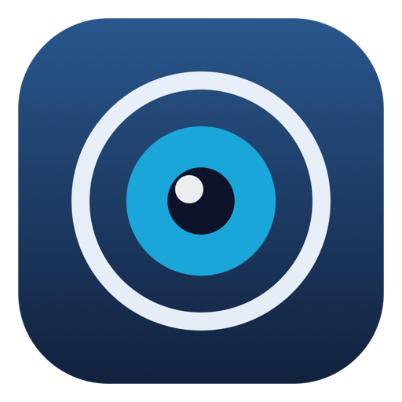
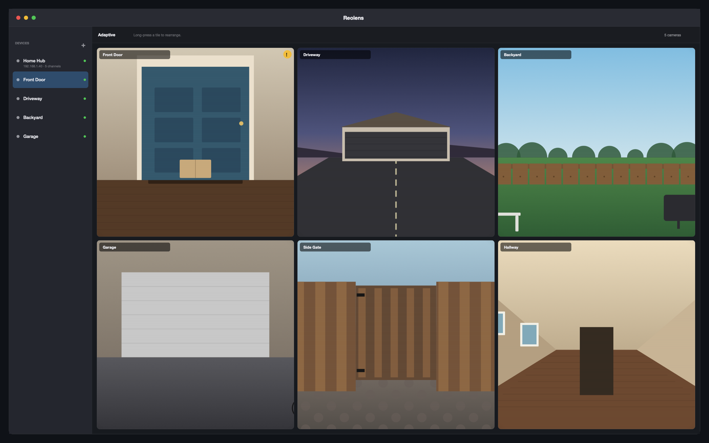
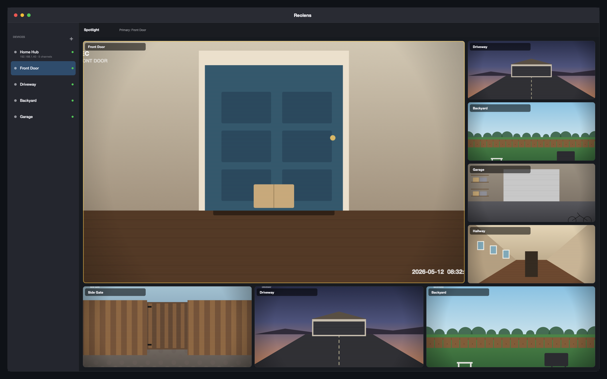
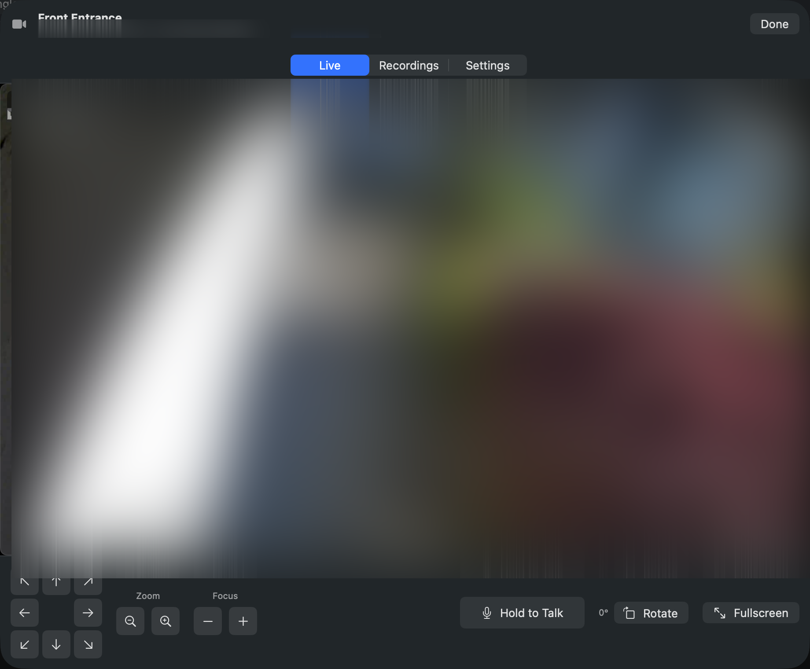
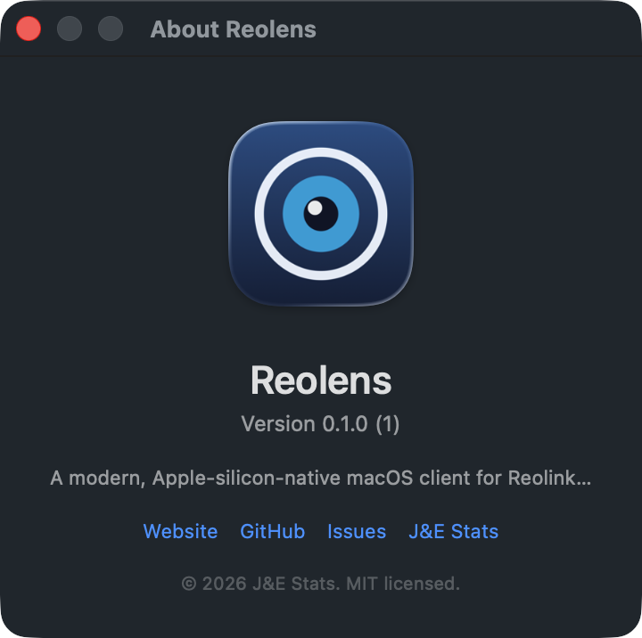

▦
Live multi-camera grids
Adaptive layout fills the window. Switch to spotlight, 2×2, 3×3, or 4×4 with one click. Drag tiles to rearrange — the order sticks.

Native on every platform. Live multi-camera grids, PTZ control, drag-to-arrange layouts, rich notifications when something moves, and your camera list synced via iCloud — passwords stay per-device in Keychain.
brew install --cask jestatsio/reolens/reolens
Adaptive layout fills the window. Switch to spotlight, 2×2, 3×3, or 4×4 with one click. Drag tiles to rearrange — the order sticks.
Pan, tilt, zoom, focus — all 17 PTZ ops from the dedicated control bar, including presets and patrols.
When motion fires, you get a macOS notification with a still image and the camera that triggered it. No more "what was that?"
SwiftUI + Apple's video decoders. Cold launches in under a second, costs almost nothing in battery, and feels like every other Mac app.
Sparkle-powered auto-updates. New versions land quietly with a one-click install — and we never phone home with anything else.
Swift, MIT-licensed, on GitHub. Tweak it, fork it, file issues.
v0.2.0 brings native iPad and iPhone apps. Your camera list, layouts, rotations, and codec preferences sync via iCloud Drive. Passwords stay per-device in Keychain — never copied off the device they were entered on.
All footage in screenshots is blurred — your cameras, your privacy.




The signed, notarized DMG straight from GitHub Releases.
Download Reolens.dmgIf you live in the terminal:
brew install --cask jestatsio/reolens/reolensThe iOS app is in TestFlight beta:
Join the betaClone the repo and run:
./Scripts/build-app.sh run